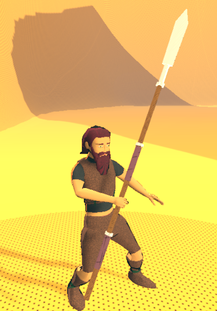
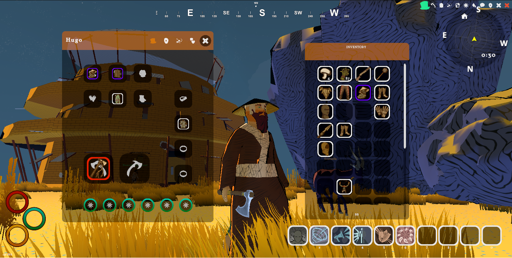
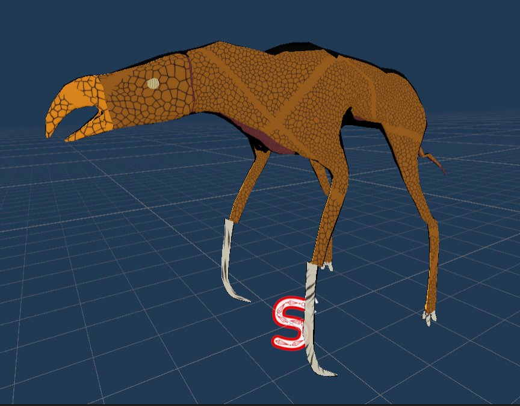
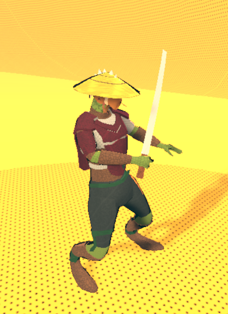
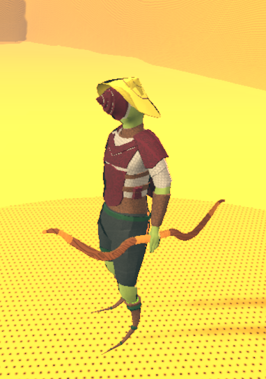

Ještě jednou se omlouvám za nepravidelnost…
Ahoj. Dnes chci ukázat pár updateů, na kterých jsem pracoval. Posledních pět měsíců nebylo jednoduchých. Dělal jsem na více frontách zároveň: YouTube, herní servery, komunitní věci a samozřejmě samotný vývoj. Neber to tak, že je to mimo hru. Budovat komunitu, se kterou můžu sdílet progres, je skoro stejně důležité jako vývoj samotný.
Mechaniky
Zpátky ke hře. Začal jsem si víc uvědomovat rozdíl mezi tím, jaké mechaniky chci mít, a tím, co ve hře aktuálně opravdu je. Přitom právě mechaniky jsou podle mě u hry nejdůležitější. Dělají hru zábavnou a dokážou přimět lidi ji milovat i přes technické nedostatky nebo slabší grafiku.
Stačí se podívat na Kenshi, Arcanum nebo klidně Skyrim. Ty hry mají spoustu problémů, ale lidé je milují, protože nabízí zajímavé systémy a někdy i jejich bugovitost přidává prostor pro kreativitu hráče. Přesně tímhle směrem chci jít i já. Hra nemusí být perfektní, musí být zábavná.
Chci si z oblíbených titulů vzít co nejvíc inspirace. Třeba skill systém podobný Kenshi nebo částečně Skyrimu, kde se hráč zlepšuje tím, co opravdu dělá. Když používáš konkrétní zbraň, rosteš v ní. Když smlouváš s pochybnými obchodníky, zlepšuješ obchod a vyjednávání.
Proto jsem vytvořil podobný systém. Ve hře je zhruba 31 skillů. Sahají od bojových disciplín po civilní činnosti jako harvestování. Každá konkrétní aktivita ve světě dává XP do odpovídající dovednosti. Například pokácení stromu dá 1 XP do harvestingu. Každý skill má 100 levelů, na první je potřeba 50 XP a každý další se zvedá o 6 %. Samozřejmě nechci, aby hráč doslova sekal 16 965 stromů na max level. Budou existovat questy, různé typy stromů i jiné způsoby zisku XP. Ale pointa je jasná: zlepšení si musíš zasloužit.
To souvisí i s dalším cílem: udělat hru výrazně tvrdší v soubojích a umírání. Budou existovat zóny, kam se bez natrénovaných skillů prostě nedostaneš. Něco jako Runescape progres, jen po mém.
Umírání je ale složitější problém. Nechci klasický jednoduchý respawn. Na druhou stranu nechci hráče ani jen trestat game overem. Líbí se mi třeba Arcanum, kde smrt znamená konec a load, ale i Kenshi, kde většinou neumřeš úplně, spíš zůstaneš zraněný, vykrvácený někde v pustině a čekáš, jestli tě někdo zachrání, sežere nebo prodá do otroctví. Z toho všeho si chci vzít inspiraci, ale nemůžu to jen zkopírovat. Moje programátorské schopnosti mají limity. Hledám proto střední cestu, třeba formou debuffu po smrti, ztráty věcí nebo malou šancí na fatální zranění končetiny, které by tě donutilo použít protézu.
Nomádský člověk s dvouručním kopím v kožené zbroji:

Ale boj není jen o skillech. Přidal jsem i stagger bar, který zatím pracovně nazývám fatigue. Ovlivňuje sesílání kouzel i držení postoje v boji. Mimo boj se regeneruje rychleji, v boji jen po menších dávkách. Každý zásah od nepřítele ti sníží stagger o 10 %, naopak vlastní útok ti ho může doplnit. Pointa je, že když vlezeš třeba do doupěte hyen, nestačí být silnější než ony. Každá další rána tě dostane blíž k tomu, že spadneš na nulu a na pár sekund se staneš zcela zranitelným.
Zároveň jsem rozšířil i weapon typy. Aktuálně je jich víc než deset a každý má vlastní animace při equipu, vlastní skill i vlastní styl boje. Některé jsou rychlé a krátké, jiné pomalejší, ale silnější. Přidal jsem i reakce na zásah, jako je krev, pushback, zvuky a další detaily.
UI
V poslední době jsem narazil i na AI, konkrétně MidJourney. Pomáhá mi generovat zajímavé nápady pro UI hry a i některé ikonky. Není to perfektní, ale šetří to čas i peníze. Níže můžeš vidět první směr.
Tady je inventář a nad ním health bar, stagger bar i energy bar.

Čištění a remeshování 3D modelů
Protože bylo potřeba optimalizovat spoustu starších modelů a připravit je na nový masking shader, předělal jsem všechna monstra a opravil různé animace. Zároveň jsem připravil i nové armor sety pro hráče.
A jo, konečně i klobouk inspirovaný Kenshi. A taky vousy a vlasy.

Předělaný Chopper. Méně polygonů, lepší animace a nový shader.

Valrug s lukem a hodně podivně deformovaným asijským kloboukem :D
